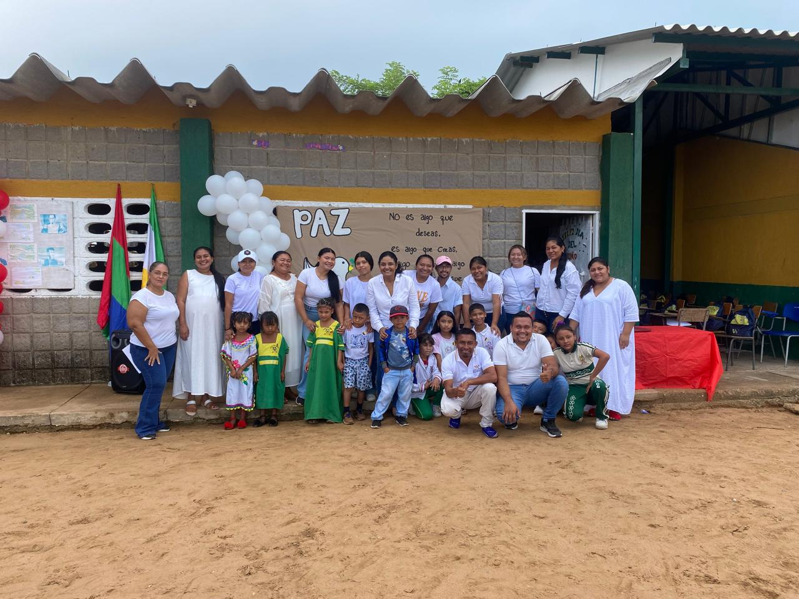
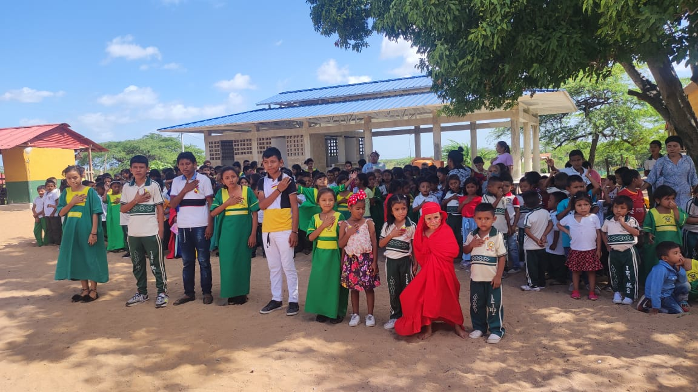
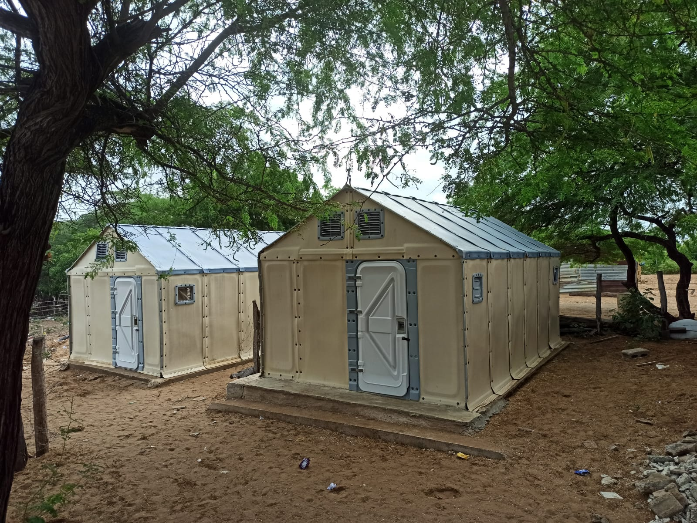
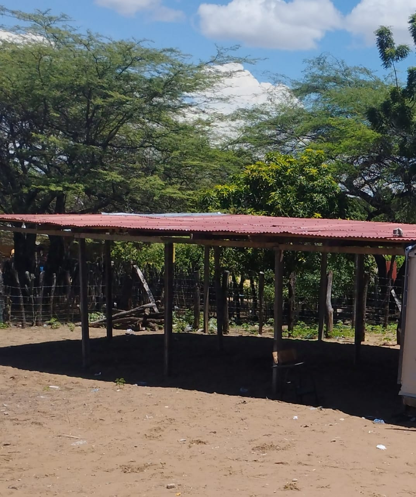
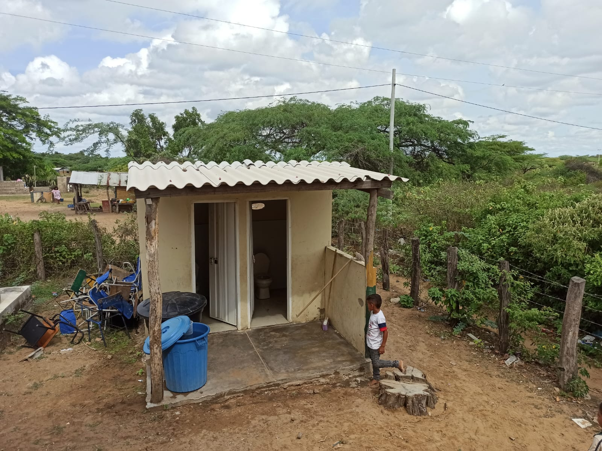
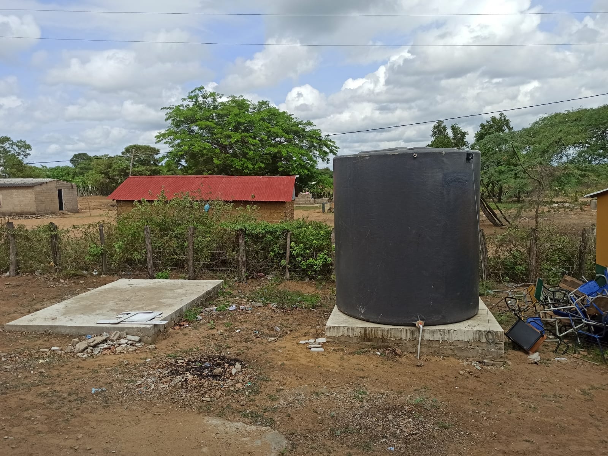

Docentes y personal administrativo
- Clemencia Polanco: docente del grado segundo
- Dora Gonzales: docente del grado quinto
- Saira Ramires: docente del grado quinto
- Miltesi Gonzales: docente del grado cuarto
- Cristina: docente del grado cuarto
- Laudith: docente del grado tercero
- Saudith Weber: docente del grado primero
- Daivis Cambar: docente del grado segundo
- Maria Celmira: docente del grado primero
- Mayerli Cambar: docente del grado prescolar
- Jose David Cambar Polanco: docente del grado sexto
- Aislen Aroca: docente del grado sexto
- Sebastian Hernandez Ramirez: Bibliotecario
- Jose Arpushana: Portero
- Ilena: Aseadora
- Miriam: Auxiliar de aseadora
Estudiantes
Estudiantes de la comunidad Taloulumana de la Institucion Educativa Indígena No. 2.
Infraestructura de la Institución

10 salones de clases

1 Sala de Informatica

1 Biblioteca
1 RH para el aseo

1 Enramada

2 baños

1 comedor

1 alberca
1 tanque de agua

2 salones en construcción
Safe Zone: Ubicados en casas de vecinos y salones de
la comunidad que conocen a los estudiantes.

Unsafe Zone: Lugares peligrosos como la alberca,
áreas con maleza, carreteras y moteles.

Green Zone: Zonas verdes como el trupillo y el palo
de mamon.
Classroom: Salones de clase.
Factores de Riesgo en la Institución y fuera de ella
Riesgos Sociales Internos:
- Discriminación o exclusión:
- Diferencias culturales pueden llevar a la exclusión o bullying entre estudiantes.
- Impacto:
- Baja autoestima, rendimiento escolar deficiente, deserción.
- Prevención:
- Programas educativos interculturales, promoción del respeto y valoración de la diversidad cultural.
- Presión académica:
- La educación estandarizada podría no adaptarse al modo de vida indígena.
- Impacto:
- Estrés, desmotivación, deserción.
- Prevención:
- Adaptación del currículo para ser culturalmente relevante y flexible.
Riesgos Sociales Externos:
- Responsabilidades familiares:
- Muchos estudiantes pueden tener tareas domésticas importantes, como el cuidado de hermanos o ayuda en labores.
- Impacto:
- Fatiga, falta de tiempo para tareas escolares, ausentismo.
- Prevención:
- Flexibilidad en horarios y tareas escolares, y programas de apoyo escolar.
- Desplazamiento o reubicación:
- Conflictos o presiones externas pueden causar desplazamientos.
- Impacto:
- Deserción, interrupción de la educación.
- Prevención:
- Programas de educación móvil o flexible, y apoyo psicosocial.
Riesgos Naturales Internos:
- Falta de acceso a agua potable:
- Las altas temperaturas y falta de infraestructura pueden causar deshidratación.
- Impacto:
- Deshidratación, fatiga, disminución del rendimiento cognitivo.
- Prevención:
- Provisión de agua potable y espacios de sombra.
- Infraestructura inadecuada:
- Las aulas pueden no estar bien adaptadas al clima extremo de La Guajira.
- Impacto:
- Fatiga, desmotivación, problemas de salud.
- Prevención:
- Aulas con aislamiento térmico y ventilación adecuada.
Riesgos Naturales Externos :
- Acceso limitado a alimentos:
- Las sequías pueden reducir la disponibilidad de alimentos en la región.
- Impacto:
- Desnutrición, bajo rendimiento escolar.
- Prevención:
- Programas de alimentación escolar y comunitaria.
- Dificultades de transporte:
- Condiciones climáticas extremas pueden dificultar el tránsito al colegio.
- Impacto:
- Ausentismo, tardanzas.
- Prevención:
- Adaptación de horarios escolares y provisión de transporte escolar comunitario.
Riesgos Socio-Naturales Internos y Externos:
- Enfermedades endémicas:
- Condiciones higiénicas pueden propagar enfermedades en la escuela y en el hogar.
- Impacto:
- Ausentismo, problemas de salud.
- Prevención:
- Educación sobre higiene, programas de vacunación y promoción de prácticas saludables.
- Exposición a contaminantes:
- Actividades mineras o agrícolas pueden afectar la calidad del agua o aire.
- Impacto:
- Enfermedades, problemas respiratorios, ausentismo.
- Prevención:
- Educación sobre filtración y purificación de agua, y promoción de prácticas agrícolas sostenibles.